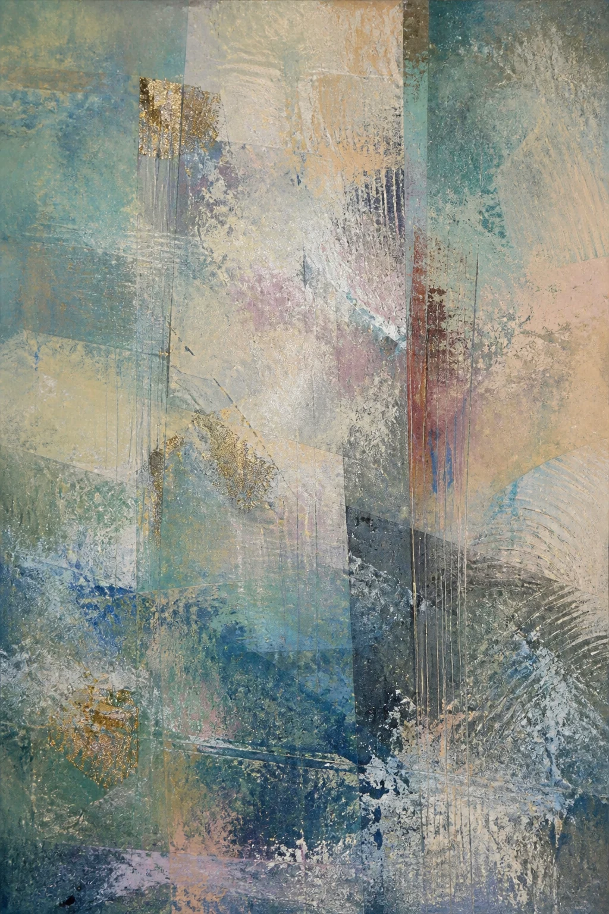
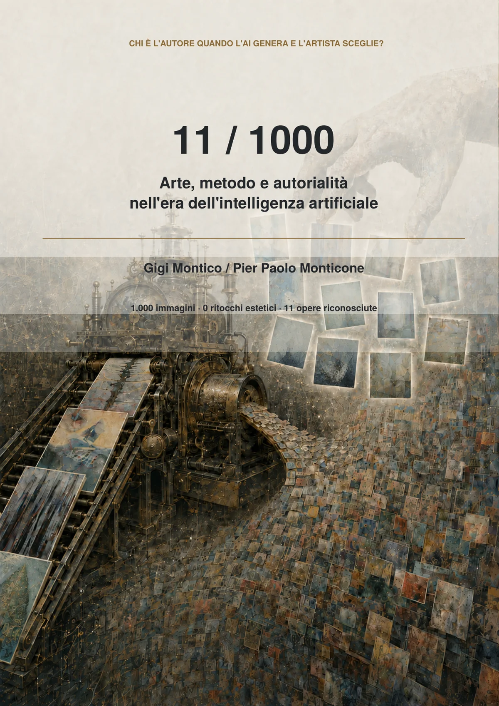

1.000
immagini canoniche generate
Progetto 2026
Arte, metodo e autorialità nell'era dell'intelligenza artificiale
Chi è l'autore quando l'AI genera e l'artista sceglie?

1.000
immagini canoniche generate
0
ritocchi estetici ai file canonici
11
opere riconosciute
989
immagini conservate nell'esperimento
Il progetto in breve
Partendo dall'archivio e dalla pratica di Gigi Montico, un metodo assistito dall'intelligenza artificiale ha prodotto una popolazione documentata di 1.000 immagini. Montico le ha valutate senza conoscere le condizioni che le avevano generate e ne ha riconosciute undici come opere della propria ricerca. Nessuna delle immagini canoniche è stata ritoccata esteticamente dopo la generazione.
Il progetto sposta l'attenzione dal gesto materiale della produzione alla scelta: se la macchina genera possibilità e l'artista decide quali assumere nella propria ricerca, dove comincia l'autorialità?
Non è stato addestrato o riaddestrato un modello proprietario sui dipinti di Montico. Archivio, riferimenti, istruzioni e condizioni hanno definito il territorio del processo.
Il processo
Opere e fotografie di Montico organizzate come riferimenti.
Riferimenti, istruzioni e condizioni definiti prima della generazione.
I risultati tecnicamente validi vengono conservati come file canonici.
Montico giudica le immagini senza vedere i parametri che le hanno prodotte.
Undici file esatti entrano nella ricerca artistica di Montico.
Ruoli distinti
Pratica artistica, giudizio e riconoscimento.
Metodo, orchestrazione, tracciabilità e analisi.
Generazione delle immagini e assistenza tecnica al processo, senza intenzione o responsabilità artistica.
Il centro visivo del progetto
Le undici non derivano da una classifica matematica. Sono gli esatti file digitali che Montico ha scelto di riconoscere nella propria ricerca. I pixel canonici restano invariati.
«Non ho generato i pixel di queste immagini. Il mio gesto artistico è riconoscere quali di esse appartengono alla mia ricerca.»
Gigi Montico
La domanda resta aperta
Il riconoscimento artistico, l'eventuale autorialità giuridica, il diritto d'autore e la proprietà non coincidono automaticamente.
Il progetto mette in discussione il rapporto fra questi ruoli senza fingere che la legge abbia già dato una risposta definitiva. Le altre 989 immagini non sono dichiarate fallimenti: restano parte documentata dell'esperimento che rende leggibile il gesto di selezione.

Il libro
Gigi Montico / Pier Paolo Monticone
Il volume documenta l'esperimento, i precedenti artistici, il metodo di generazione e selezione, l'analisi delle preferenze di Montico e il problema dell'autorialità artistica e giuridica nell'era dell'AI.
Libro in preparazione
La versione corrente è ancora in revisione editoriale e legale. Il PDF sarà pubblicato qui soltanto dopo l'approvazione finale.
Un progetto distinto
11 / 1000 è un esperimento successivo e autonomo rispetto alla precedente serie Arte digitale con supporto IA.